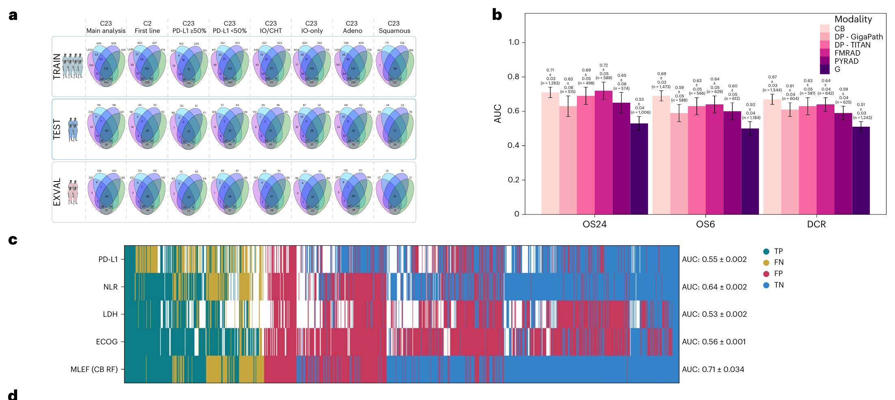

多模態與資料融合
白話解釋
- 模態（modality）：資料的「種類」。這篇有四種：臨床抽血（表格數字）、CT 影像、病理切片影像、基因檢測。
- 多模態：把不同種類的資料一起餵給 AI，就像醫師看病時同時看病歷、影像、檢驗報告。
- 早期融合：一開始就把所有資料的特徵串成一長條再丟進模型。簡單，但每位病人每種資料都要有。
- 中期融合：每種資料先各自整理成精簡的摘要，再合併判斷；缺某種資料時也能運作。
- 直覺上資料越多越準，但實際上「資料齊全的人越來越少」，模型反而容易學到雜訊。
在這篇論文怎麼用
- 四種資料的人數差很多：臨床 2,396、基因 1,723、CT 1,705、病理 936 prelaj2026 p.2。
- 臨床、CT、病理三種都有的 400 人，四種都齊全的只有 339 人 prelaj2026 p.2。
- CT 有兩條擷取方式：傳統 radiomics 128 個特徵，以及 Foundation model（基礎模型） 擷取的特徵 prelaj2026 p.3。

相關頁面
Foundation model（基礎模型）、機器學習、深度學習與 logistic regression、資料越多越準？多模態的進步沒有重現、AI 能不能幫醫師判斷誰適合免疫治療？I3LUNG 研究